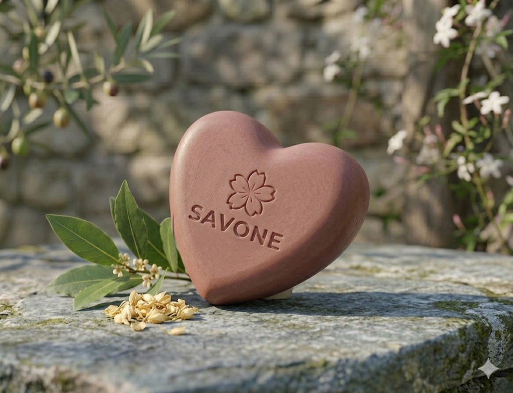

Jabón de Arcilla Rosa y Jazmín del Mediterráneo
$18.000
Pensado especialmente para el cuidado de pieles sensibles o maduras, cuenta con una base sumamente suave de aceite de almendras y manteca de cacao. Su tonalidad rosa viejo y mate se obtiene de forma 100% natural gracias a la inclusión de arcilla rosa francesa, rica en oligoelementos que limpian sin resecar. Está enriquecido con extracto puro de flores de jazmín y aceite esencial de hojas de olivo, proporcionando un aroma floral sofisticado, empolvado y profundamente relajante que evoca los jardines mediterráneos.
Beneficios Principales
- local_florist Hidratación intensiva duradera
- shield_with_heart Restaura la barrera natural de la piel
- eco Ingredientes 100% naturales
- favorite Artesanía en forma de corazón

Nuestra Promesa Pura
"Creemos que el cuidado personal debe ser un ritual de conexión con la naturaleza. Cada Jabón Corazón es vertido a mano, respetando el tiempo de curado natural para preservar las propiedades de cada ingrediente."
Certificado Orgánico
Ingredientes de comercio justo